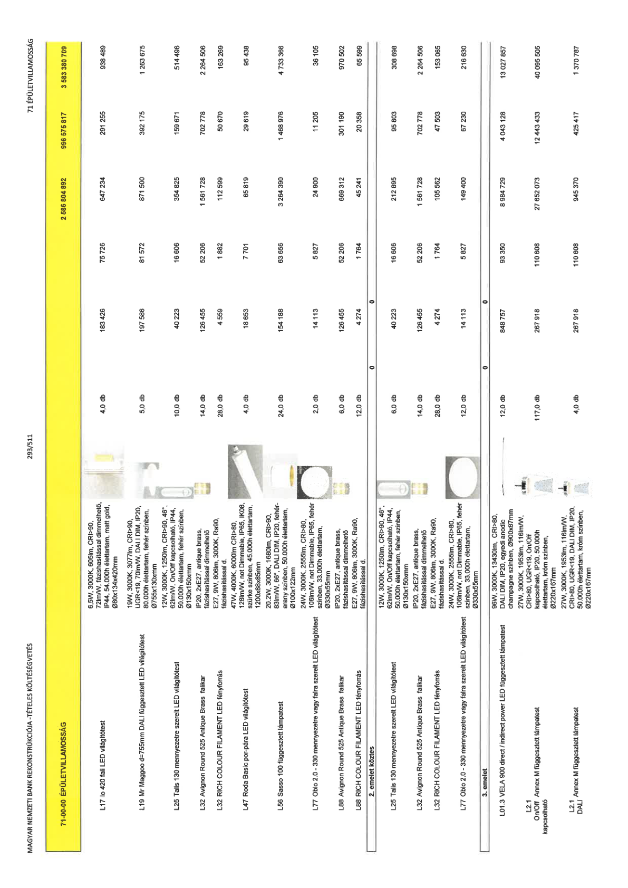

| Tétel | Menny. | Egys. | Anyag e.ár (net HUF) | Díj e.ár (net HUF) | Anyag összesen (net HUF) | Díj összesen (net HUF) | Anyag+Díj összesen (net HUF) |
|---|---|---|---|---|---|---|---|
| 71-00-00 ÉPÜLETVILLAMOSSÁG | NaN | NaN | 0 | 0 | 2 586 804 892 | 996 575 817 | 3 583 380 709 |
| 6,5W, 3000K, 605lm, CRI>90, 72lm/W, fázishasítással dimmelhető, IP44, 54.000h élettartam, matt gold, Ø80x134x420mm | 0 | 0 | 0 | 0 | 0 | 0 | 0 |
| L17 io 420 fali LED világítótest | 4,0 | db | 183 426 | 75 726 | 647 234 | 291 255 | 938 489 |
| 19W, 3000K, 3077lm, CRI>90, UGR<19, 70lm/W, DALI DIM, IP20, 80.000h élettartam, fehér színben, Ø755x130xmm | 0 | 0 | 0 | 0 | 0 | 0 | 0 |
| L19 Mr Maggoo d=755mm DALI függesztett LED világítótest | 5,0 | db | 197 586 | 81 572 | 871 500 | 392 175 | 1 263 675 |
| 12W, 3000K, 1250lm, CRI>90, 46°, 62lm/W, On/Off kapcsolható, IP44, 50.000h élettartam, fehér színben, Ø130x150xmm | 0 | 0 | 0 | 0 | 0 | 0 | 0 |
| L25 Talls 130 mennyezetre szerelt LED világítótest | 10,0 | db | 40 223 | 16 606 | 354 825 | 159 671 | 514 496 |
| IP20, 2xE27, antique brass, fázishasítással dimmelhető | 0 | 0 | 0 | 0 | 0 | 0 | 0 |
| L32 Avignon Round 525 Antique Brass falikar | 14,0 | db | 126 455 | 52 206 | 1 561 728 | 702 778 | 2 264 506 |
| E27, 9W, 806lm, 3000K, Ra90, fázishasítással d. | 0 | 0 | 0 | 0 | 0 | 0 | 0 |
| L32 RICH COLOUR FILAMENT LED fényforrás | 28,0 | db | 4 559 | 1 882 | 112 599 | 50 670 | 163 269 |
| 47W, 4000K, 6000lm CRI>80, 128lm/W, not Dimmable, IP65, IK08, szürke színben, 45.000h élettartam, 1200x88x85mm | 0 | 0 | 0 | 0 | 0 | 0 | 0 |
| L47 Roda Basic por-pára LED világítótest | 4,0 | db | 18 653 | 7 701 | 65 819 | 29 619 | 95 438 |
| 20,2W, 3000K, 1680lm, CRI>90, 83lm/W, 66°, DALI DIM, IP20, fehér-arany színben, 50.000h élettartam, Ø100x122mm | 0 | 0 | 0 | 0 | 0 | 0 | 0 |
| L56 Sasso 100 függesztett lámpatest | 24,0 | db | 154 188 | 63 656 | 3 264 390 | 1 468 976 | 4 733 366 |
| 24W, 3000K, 2555lm, CRI>80, 106lm/W, not Dimmable, IP65, fehér színben, 33.000h élettartam, Ø330x55mm | 0 | 0 | 0 | 0 | 0 | 0 | 0 |
| L77 Oblo 2.0 - 330 mennyezetre vagy falra szerelt LED világítótest | 2,0 | db | 14 113 | 5 827 | 24 900 | 11 205 | 36 105 |
| IP20, 2xE27, antique brass, fázishasítással dimmelhető | 0 | 0 | 0 | 0 | 0 | 0 | 0 |
| L88 Avignon Round 525 Antique Brass falikar | 6,0 | db | 126 455 | 52 206 | 669 312 | 301 190 | 970 502 |
| E27, 9W, 806lm, 3000K, Ra90, fázishasítással d. | 0 | 0 | 0 | 0 | 0 | 0 | 0 |
| L88 RICH COLOUR FILAMENT LED fényforrás | 12,0 | db | 4 274 | 1 764 | 45 241 | 20 358 | 65 598 |
| 2. emelet köztes | NaN | NaN | 0 | 0 | 0 | 0 | 0 |
| 12W, 3000K, 1250lm, CRI>90, 46°, 62lm/W, On/Off kapcsolható, IP44, 50.000h élettartam, fehér színben, Ø130x150xmm | 0 | 0 | 0 | 0 | 0 | 0 | 0 |
| L25 Talls 130 mennyezetre szerelt LED világítótest | 6,0 | db | 40 223 | 16 606 | 212 895 | 95 803 | 308 698 |
| IP20, 2xE27, antique brass, fázishasítással dimmelhető | 0 | 0 | 0 | 0 | 0 | 0 | 0 |
| L32 Avignon Round 525 Antique Brass falikar | 14,0 | db | 126 455 | 52 206 | 1 561 728 | 702 778 | 2 264 506 |
| E27, 9W, 806lm, 3000K, Ra90, fázishasítással d. | 0 | 0 | 0 | 0 | 0 | 0 | 0 |
| L32 RICH COLOUR FILAMENT LED fényforrás | 28,0 | db | 4 274 | 1 764 | 105 562 | 47 503 | 153 065 |
| 24W, 3000K, 2555lm, CRI>80, 106lm/W, not Dimmable, IP65, fehér színben, 33.000h élettartam, Ø330x55mm | 0 | 0 | 0 | 0 | 0 | 0 | 0 |
| L77 Oblo 2.0 - 330 mennyezetre vagy falra szerelt LED világítótest | 12,0 | db | 14 113 | 5 827 | 149 400 | 67 230 | 216 630 |
| 3. emelet | NaN | NaN | 0 | 0 | 0 | 0 | 0 |
| 96W, 3000K, 13430lm, CRI>80, DALI DIM, IP20, egyedi anodic champagne színben, Ø900x87mm | 0 | 0 | 0 | 0 | 0 | 0 | 0 |
| L01.3 VELA 900 direct / indirect power LED függesztett lámpatest | 12,0 | db | 848 757 | 93 350 | 8 984 729 | 4 043 128 | 13 027 857 |
| 27W, 3000K, 1953lm, 116lm/W, CRI>80, UGR<19, On/Off kapcsolható, IP20, 50.000h élettartam, króm színben, Ø220x167mm | 0 | 0 | 0 | 0 | 0 | 0 | 0 |
| L2.1 On/Off Annex M függesztett lámpatest kapcsolható | 117,0 | db | 267 918 | 110 608 | 27 652 073 | 12 443 433 | 40 095 505 |
| 27W, 3000K, 1953lm, 116lm/W, CRI>80, UGR<19, DALI DIM, IP20, 50.000h élettartam, króm színben, Ø220x167mm | 0 | 0 | 0 | 0 | 0 | 0 | 0 |
| L2.1 DALI Annex M függesztett lámpatest | 4,0 | db | 267 918 | 110 608 | 945 370 | 425 417 | 1 370 787 |
